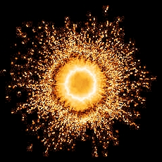

|
In statu nascendi
You and those who are as petite as you are, use to imagine that the minute what you call life, is serving a significant, crucial expression which you try to identify as a higher purpose, and you believe to sense that your self-projected reality could tag along this self-created imagination of your evaporate illusions and fugitive visions; your escaping dreams and your dreamy desires; your absconding admirations and your vanishing wishes. - But there were times before your times; in eras before every era; in an age before all the ages, when your complete sense; yes your absolute nous, awoke out of the one single drop of an endless emptiness and divine beauty of an indecipherable cosmic chaos. For apparently infinite epochs and multitudinous shining periods there was no perceptible sagacity in the cosmic disorder of the order till the day as a cosmic anarchy begun to orchestrate with the supreme command, and inflamed the Big Bang of Spirit. - The true spirit of men comes out of the unknown space of their heart. The true heart of men is the nameless gizmo which crafts you wisdom and unlocks your inner and outer truths of essence; your entrance key for stepping light-hearted and happy-go-lucky through the worldly world. - The true wisdom of your heart is the magic key to salvation and blessedness. The tender brightness of your pure soul is the bright smile of the whole world. All creations in heaven and on earth are a reversible reflect of your own being. This being is on earth as in heaven. Feeling the infinite adore of its own generator, floating, circulating and rotating through every sole fibre, every single breath and every inconspicuous, unobtrusive cell of your insignificant, inconsequential essence, is the utmost gift a human heart could ever endure. Serving the kind will of this only initiator of all the existences, all beings and all the essences, is the supreme gift a human soul may ever experience. Seeking the whole world as a combination back to this contriver; exploring and stepping through the unknown, tight and noisy jungle of the invincible, visible phantom called certainty, while setting imagined orientation points and self-created imaginations like close or far, white or black, parable or difference; the soul is often anxious, fractious, manoeuvred and insecure, Insecure of the possibilities which the never-ending creation offers, presents and represents, which shine to be interesting and admirable, inviting and tempting, pleasant and confident first, but at the end to be only insensitive or excruciating, malicious or apathetic, malevolent or indifferent. The world which is around you, my friend, and whose part you are, is wonderful and has what your soul admires the most; its daily allurements and every bit of the nightly temptations, real seductions and some unreal introductions but also what represents the paramount in one sophisticated world; its responsibility, obligations and consideration. - Your soul is searching back for the light which is the seat of your soul. - Enlightenment, my human child, is the most colossal gift that a human spirit could ever receive, and it starts in the true heart; the pure soul which found its true being through the incessant fervour in its heart. But how an essence could ever be truly exempted and purely sun-like shining without the spiritual orgasm inside its core; without understanding the grace, the beauty and divine of its originator through its vivid empathy? Enlightened men have existed since mankind exists. Enlightened forces had existed before mankind exists. Enlightened hearts shall be one that in all mankind exists.
This is just our very own way to glide through the spiritual worlds. You are not one of us nor are you desired to ever become one of us. - There is no moment signed in time in which somebody could join the light of the primal ember; but time decides if there will be a need for a new lightning of the luminosity; this incident which happens only once in your lifetime is the rebirth of your spirit and it starts with self recognition. The rebirth into the circle of light is irreversible. It is obvious and beyond a shadow of a doubt an obligation for my brother to possess an academic degree; but if you think you should accomplish your academic degree only to be proficient to cross the threshold, you’re not one of us. To be a freemason is not a necessity for my brother but almost all honourable members of our venerable Order are also honourable members of their local venerated Masonic lodge. The majority of my honourable Masonic brethren don’t even know that we exist and they don’t hold any kind of connection to any of our honoured fraternities at all. Those are two ways which have been opened to the elements by the One. There are myriads of masons worldwide but only a very few are of our kind. - Our souls are a myriad of wars, battles and fights but also the place where the creator meets his creation. As an honourable Knight of Kadosh, a mason of 32nd degree in Scottish Rites or honourable Knights Templar of the Commandery Order of York Rites, my brother is competent to enter the pyramid at the 3rd echelon.
|
Copyright © 2003  All rights
reserved.
All rights
reserved.